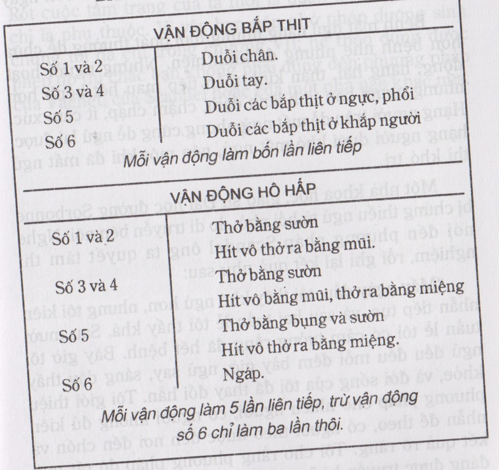

Bệnh mất ngủ có nhiều hình thức và nhiều nguyên nhân.
Bệnh mất ngủ có nhiều hình thức: Có người trằn trọc hoài không nhắm mắt được; có người nằm xuống là ngáy liền nhưng chỉ hai ba giờ sau tỉnh dậy rồi ngủ lại không được nữa: có người chợp mắt được một chút rồi tỉnh, cả giờ sau mới lại chợp mắt được chút nữa rồi lại tỉnh dậy, như vậy mấy lần trong một đêm.
Dù có hình thức nào mà bệnh kéo dài hằng tuần hằng tháng thì ảnh hưởng tới cơ thể cũng tai hại. Các nội tiết tuyến hoạt động không điều hòa nữa, người thấy mệt mỏi, dễ bị lạnh, hệ thống thần kinh lúc nào cũng căng thẳng các tế bào trong óc bị độc, tính tình hóa ra quạo quọ, bất thường, ký tính và sức làm giảm đi rất nhiều; để lâu thì tất cả các bộ phận đều suy nhược.
Bệnh đó cũng có rất nhiều nguyên nhân mà người ta có thể sắp vào hai loại:
- Nguyên nhân thuộc về cơ thể: những chứng nóng lạnh hay đau gan, đau bao tử, đau thận, đau tim, hoặc ngứa ngáy vì một cái mụn, nhức nhối vì một vết thương… đều có thể làm cho ta khó ngủ hay mất ngủ. Thứ mất ngủ có tính cách bệnh lí đó, không đáng lo, hễ trị được bệnh gây ra nó thì tự nhiên ta ngủ trở lại được.
Gặp trường hợp đó, bạn phải đi bác sĩ.
- Nguyên nhân thuộc về tinh thần: Vì đời sống ồn ào, bận rộn, ta phải tính toán, lo lắng suốt ngày, thần kinh kích thích quá độ, rồi sinh ra mất ngủ. Chính trường hợp đó mới đáng lo, chẳng những vì bệnh khó trị mà còn vì số người mắc bệnh mỗi ngày một tăng. Hiện nay ở châu Âu, có khoảng ba chục phần trăm dân số khó ngủ nhiều hay ít; ở châu Mỹ, con số đó lên tới 52%.
Trong chương này chúng tôi chỉ xét trường hợp mất ngủ vì tinh thần thôi.
Những điều nên nhớ khi mắc bệnh mất ngủ.
Khi bệnh mới phát và nhẹ, thì chỉ cần theo những lời khuyên dưới đây, bệnh cũng có thể giảm hoặc hết được:
- Đừng lo lắng gì cả.Đó là lời khuyên quan trọng nhất.Hiện nay chúng ta có nhiều thuốc và nhiều phương pháp để trị bệnh đó.Dù có thiếu ngủ một vài đêm, hoặc luôn trong một tuần, mà được ngủ đầy giấc trong một đêm thì sức khỏe cũng bình phục lại ngay. Không nhất định là mỗi đêm phải ngủ đủ tám giờ, có người ngủ nhiều, có người ngủ ít, do bản chất của từng người; bình thường mỗi đêm ngủ được độ năm giờ, rồi ban ngày ngủ thêm được nửa giờ, thì cũng gần đủ rồi, không hại gì cho sức khỏe nếu tình trạng đó không kéo dài hằng tháng và nếu trong lúc không ngủ được ta vẫn bình tĩnh, nhắm mắt nằm yên để nghỉ ngơi. Vả lại càng lo, thần kinh càng bị kích thích mà bệnh càng tăng, cơ thể càng dễ suy nhược.
Bạn lại nên biết rằng có một số người ngủ đầy đủ mà vẫn tưởng mình mất ngủ, đâm lo lắng rồi hóa mất ngủ thật. Ông Kamiya ở Mỹ đã nghiên cứu giấc ngủ thấy nó không say đều đều từ lúc mới ngủ cho tới lúc tỉnh, mà nó tiến triển theo một nhịp lên xuống: mới đầu ta ngủ say trong khoảng 1 giờ rưỡi tới 2 giờ, rồi giấc ngủ bớt say trong khoảng mười phút; kế đó ta lại ngủ say 1 giờ rưỡi nữa rồi lại ngủ bớt say trong mươi mười lăm phút; càng gần sáng thì khoảng ngủ say càng ngắn lại mà khoảng ngủ không sai dài ra. Những người tưởng mình thiếu ngủ thường là những người thức giấc hai ba lần trong một đêm rồi ngủ lại được ngay, nhưng sáng dậy chỉ nhớ tới những lúc thức giấc đó thôi, không biết rằng những lúc trước và sau họ ngủ say như khúc gỗ.
Vậy thì bạn khó ngủ thì cứ mặc kệ nó, đừng rán ngủ cho được, càng cố ép mình ngủ thì lại càng khó ngủ thêm. Cứ nằm yên, nghỉ ngơi đừng lo gì cả, cơ thể ta có lúc thế này thế khác, đêm nay không ngủ được thì đêm khác ngủ được.
- Nên đi ngủ đúng giờ để cho thành thói quen mà dễ ngủ hơn. Nói đúng giờ, không phải là đúng từng phút, sớm muộn 15, 20 phút cũng không hại gì; và mỗi tuầnthức khuya một đêm cũng không sao.
Nên đi ngủ sớm, khoảng 10, 11 giờ, nhưng đừng tin rằng giấc ngủ trước 12 giờ khuya tốt gấp hai giấc ngủ sau giờ đó.
- Đừng đi ngủ ngay khi mới ăn xong bữa tối. Bữa đó nên ăn những món nhẹ cho dễ tiêu. Nhưng nếu bộ tiêu hóa của bạn rất tốt thì lời khuyên này không cần phải theo.
- Buổi tối nên nghỉ ngơi, kiếm việc gì để tiêu khiển cho óc khỏi phải lo nghĩ, cơ thể khỏi bị mệt nhọc quá, vì mệt quá, cũng khó ngủ.
Có thể đi dạo mát nửa giờ hay một giờ; nếu muốn đọc sách thì đọc những loại vui, không phải suy nghĩ, mà cũng đừng nên đọc qua một giờ.
- Phòng ngủ nên mát mẻ, thoáng khí, và tối.
- Nên nằm ngửa, nằm sấp, nghiêng bên mặt hay bên trái? Điều đó không quan trọng. Đều là do thói quen của mọi người cả. Vả lại dù nằm theo một thế nào, thì trong lúc ngủ ta cũng không sao giữ hoài cái thế đó được, mà tự nhiên lăn qua lăn lại, để cho huyết mạch lưu thông điều hòa.
- Như trên chúng tôi đã nói, càng về sáng, giấc ngủ của ta càng bớt say, một tiếng động nhỏ có thể làm cho ta thức giấc được. Nếu bạn có thói thức giấc quá sớm thì xin bạn nên nhớ hai điều dưới đây:
- đừng tin rằng trong trường hợp đó, nên đi ngủ trễ để cho tới sáng ngủ vẫn còn say, vì dù ngủ trễ thì gần sáng ta vẫn tỉnh dậy mà như vậy ta thiếu thêm mấy giờ ngủ nữa.
- vậy cứ nên đi ngủ theo giờ đã định, rồi nếu ta thức giấc lúc nào thì cứ bình tĩnh, nằm yên ở giường, đừng lo nghĩ gì cả, nhắm mắt, thở đều đều, ngủ lại được thì càng hay, mà không ngủ lại được thì như vậy cũng giúp cho cơ thể và bộ thần kinh nghỉ ngơi thêm được rồi.
Những cách trị bệnh mất ngủ.
Nếu theo đúng những lời khuyên đó trong mươi bữa nửa tháng mà bệnh mất ngủ của bạn không giảm thì phải tìm phương để trị.
Trước khi giới thiệu phương pháp của Jean Scandel, phương pháp mới mẻ nhất, công hiệu mà vô hại, chúng tôi xin kể qua vài cách trị hiện nay thường dùng.
Thuốc thôi miên – Cách trị mạnh nhất mà cũng có hại nhất là dùng những thuốc thôi miên (hypnotique). Thời xưa người ta chỉ dùng những loại cây như quả thẩu, nhựa thẩu (nha phiến); chất hachish (một thứ thuốc mê rút ở một thứ cây gai Ấn Độ, người Ả Rập dùng thường ngày như ta nhai trầu)… Từ thế kỉ trước, người ta tìm thêm được nhiều chất hóa học (như các chất éther, chlorophorme, aldéhyde, sufonalide, uréthané, amide, uréide, barbiturique…). Hết thảy các thuốc đó đều tác động mạnh đến óc, làm cho ta mê man. Có thứ tác động chậm nhưng lâu, uống vào ta ngủ mê từ 10 đến 12 giờ liền; có thứ tác động maunhưng rất ngắn; từ 1 giờ đến 1 giờ rưỡi rồi tỉnh dậy.
Thứ nào cũng có hại, càng mạnh thì càng hại nhiều; khi tỉnh dậy ta không khoẻ khoắn như sau một giấc ngủ bình thường. Hại nhất là cơ thể lần lần quen thuốc, ta phải tăng liều thuốc lên.
Hiện nay có thứ thuốc an thần (tranquillisant) tương đối ít hại hơn cả mà cũng khá công hiệu: khi nào lo lắng, bực tức, quạo quọ, hoặc mất ngủ, uống một viên là thấy bình tĩnh lại, ngủ được một giấc khoảng năm sáu giờ. Nhưng thứ thuốc đó mới phát minh chừng hai chục năm nay, các nhà bác học chưa biết đích xác nó sẽ có hại ra sao tới cơ thể; hình như uống nhiều và lâu thì thần kinh nhụt đi, phản ứng của ta chậm lại; chẳng hạn khi chưa uống thuốc, cầm lái xe, thấy tai nạn ta biết thắng lại liền; khi uống nhiều thuốc rồi thì ta thắng lại chậm mất một chút(1).
Nhưng phải là nhà chuyên môn mới biết cách xoa bóp, và mỗi lần phải xoa bóp từ 20 đến 30 phút.Ở nước ta, ít ai đủ phương tiện dùng phương pháp đó.
Ngoài ra còn những cách:
- Châm cứu.
- Trị bằng điện (électrothérapie).
- Tắm nước ấm (nước nóng có người không chịu vì nó kích thích quá mạnh).
Phương pháp của Jean Scandel.
Tất cả những cách trị kể trên đều hoặc phải dùng thuốc, hoặc phải cần tới một nhà kĩ thuật chuyên môn.
Phương pháp chúng tôi giới thiệu dưới đây của Jean Scandel mới mẻ nhất, công hiệu mà lại rất tự nhiên không phải dùng thuốc và ai cũng có thể theo để trị lấy cho mình được.
Như trên chúng tôi đã nói, giấc ngủ một khi đã mất vì những nguyên nhân về tinh thần thì ta không thể bắt buộc nó trở về được, càng gắng sức lại càng mất ngủ thêm; phải tìm cách dụ nó, nhử nó cho nó trở về một cách tự nhiên. Đó là qui tắc của phương pháp Scandel.
Còn nền tảng khoa học của phương pháp là những thí nghiệm của nhà sinh lí học Nga Pavlov (1849 – 1936). Danh của Pavlov càng ngày càng tăng vì thuyết «phản ứng có điều kiện» (réflexe conditionné) của ông có nhiều áp dụng lớn lao trong y học, tâm lí học. Phương pháp «đẻ không đau» (accouchement sans douleur) đã được truyền bá ở Nga, Mỹ, Pháp, mấy năm trước lại được vài tờ báo ở Việt Nam giới thiệu, chính là một trong những áp dụng đó, và phương pháp trị bệnh mất ngủ của Scandel cũng là một áp dụng đương được y giới Âu Mỹ lưu ý tới.
Dưới đây chúng tôi xin kể lại một thí nghiệm giản dị và đặc biệt của Pavlov để độc giả hiểu thế nào là một «phản ứng có điều kiện».
Khi ta cho một con chó ăn thịt, tức thì nước miếng của nó tiết ra: đó là một phản ứng tự nhiên, trời sanh (réflexe inné). Nếu ta cho nó ăn thịt và đồng thời rung một cái chuông, làm như vậy nhiều lần thì sẽ tới một lúc chẳng cần phải cho nó miếng thịt, chỉ rung chuông thôi, nước miếng của nó cũng tiết ra. Sự phản ứng lần này gọi là phản ứng có điều kiện vì phản ứng đó chỉ hiện ra với điều kiện là ta đã tạo nó ra, cho nó đủ thời gian để phát triển thành một thói quen. Vì vậy chúng tôi muốn dịch «réflexe conditionné» là phản ứng nhân tạo.
Những phản ứng nhân tạo đó không tồn tại hoài được. Cứ tiếp tục rung chuông mà không cho chó ăn thịt, thì sẽ tới một lúc mà tiếng chuông không đủ làm cho nó tiết nước miếng ra nữa.
Phát minh được điều ấy rồi, Pavlov bỏ ra hằng năm thí nghiệm thêm để chứng minh rằng trong đời sống sinh vật sự phản ứng có điều kiện giữ một vai trò quan trọng. Khi mới trông thấy một trái chanh, hoặc chỉ nghĩ tới một trái chanh không cần phải ăn nó, mà nước miếng của ta cũng tiết ra, đó cũng là một phản ứng có điều kiện nữa.
Muốn tạo một phản ứng có điều kiện thì phải giữ đúng từng chi tiết trong thí nghiệm. Chẳng hạn chỉ được rung một thứ chuông thôi, nếu đổi chuông, tiếng chuông nghe khác đi thì con chó không tiết nước miếng ra nữa. Hoặc nếu ta đưa ra một hình tròn cùng với miếng thịt để tạo một phản ứng, khi phản ứng đã thành rồi, ta đưa ra một hình bầu dục thì phản ứng cũng không hiện, con chó không tiết nước miếng. Hoặc trong khi cho nghe tiếng chuông, trông thấy hình tròn mà thình lình bật một ngọn đèn lên, hay là cho một con vật khác chạy qua, thì phản ứng cũng không hiện.
Người ta lại có thể tạo được những phản ứng xuất hiên chậm.Rung chuông rồi đợi 15, 20 giây sau mới đưa miếng thịt ra, như vậy nhiều lần thì rồi con chó sẽ chỉ tiết nước miếng ra khoảng 15 hay 20 giây sau khi nghe tiếng chuông.
Tóm lại là ta có thể tạo được các phản ứng theo ý muốn của ta, bằng một cách thức mà ta tự định trước; và như vậy ta có thể tập cho mỗisinh vật có phản ứng khác nhau; còn những phản ứng tự nhiên thì hễ là sinh vật cùng một loài đều giống nhau cả.
Nhưng tại sao lại có hiện tượng phản ứng có điều kiện như vậy. Theo Pavlov thì là do sự hoạt động của óc. Khi ta đưa miếng thịt ra thì bộ thần kinh của con chó kích thích một trung tâm nào đó trong óc nó, khi rung chuông, thì một trung tâm khác trong óc nó bị kích thích. Lập lại nhiều lần thí nghiệm đó thì giữa hai trung tâm đó lần lần có sự liên lạc với nhau; mà một trung tâm nào bị kích thích cũng làm cho trung tâm kia bị kích thích luôn; vì vậy chỉ cần rung chuông không đưa thịt ra mà con chó cũng tiết nước miếng.
Pavlov còn nhận thấy rằng khi tạo được một phản ứng có điều kiện rồi, thì óc con vật chỉ chờ đợi tiếng chuông rung lên, và trong lúc đó những trung tâm khác trong óc nó tạm ngưng hoạt động. Đôi khi sử phản ứng đó xâm chiếm óc con vật tới nỗi nó buồn ngủ, nhất là trong trường hợp ta tạo cho nó một phản ứng xuất hiện rất chậm; rung chuông rồi đợi 5, 10 phút sau mới đưa thịt ra; trong 5, 10 phút chờ đợi đó có con chó muốn thiêm thiếp đi.
Khi ta mất ngủ lâu ngày thì cơ thể ta quen với bệnh đó, và chẳng có một nguyên nhân gì để mất ngủ (như chẳng có bệnh tật, chẳng lo lắng suy tính gì cả) mà ta cũng vẫn khó ngủ.Cách trị là phải tập cho cơ thể làm sao bỏ thói quen mất ngủ đó đi, lấy lại thói quen dễ ngủ, nghĩa là tạo nên một phản ứng dễ ngủ để đuổi cái phản ứng khó ngủ đi.
Muốn tạo một thói quen thì phải lâu. Phương pháp của Scandel rất giản dị, chỉ cần thở và làm ít cử động cho bắp thịt nghỉ ngơi và quên những hoạt động ban ngày: mỗi tối mất mười lăm phút, nhưng phải từ 5 tới 10 tuần lễ mới có kết quả.
Nội một việc làm những cử động đúng giờ và đều đều mỗi tối cũng đã là gây những điều kiện để tạo một phản ứng tức là sự buồn ngủ rồi.
Nhưng ta còn nhận thấy thêm điều này: khi ta buồn ngủ thì ta ngáp dài ngáp ngắn, vươn vai, duỗi tay duỗi chân. Đó là một phản ứng tự nhiên.Bây giờ, dù ta chưa buồn ngủ, cũng cứ ngáp, và vươn vai, tối nào cũng vậy mà đúng giờ, thì ta lại gây thêm điều kiện để tạo một phản ứng tức sự buồn ngủ nữa.Vì vậy trong phương pháp Scandel có những cử động ngáp và vươn vai.
Tóm lại sự mất ngủ gây thêm sự mất ngủ; mà sự thèm ngủ gây thêm sự thèm ngủ. Con chó của Pavlov mới đầu, trông thấy miếng thịt và nghe tiếng chuông cũng đủ tiết ra nước miếng; người mất ngủ theo phương pháp Pavlov cũng vậy: trong vài ba thángđầu phải làm những cử động duỗi chân tay, thở ngáp, vươnvai rồi mới ngủ (trong khi vận động như vậy, óc ta đợi giấc ngủ, bớt hoạt động đi, nên dễ ngủ); rồi sau chỉ tới giờ đó, không cần phải làm những cử động đó nữa mà cũng ngủ được. Qui tắc giản dị như vậy. Điều khó là phải kiên nhẫn trong một thời gian lâu để tạo được một thói quen (2).
Trước khi tập ngủ, bạn nên nhớ kĩ những điều dưới đây:
- Đừng gắng sức để ngủ cho được, đừng có ý muốn ngủ cho được, đừng theo dõi kết quả, vì như vậy lại càng khó ngủ thêm. Cứ đều đều luyện tập rồi mặc kệ nó, hoàn toàn thản nhiên, không hấp tấp muốn mau thành công. Khi ta đã an phận nhận sự mất ngủ rồi thì sự mất ngủ không hành hạ ta nữa và tự nhiên nó phải lùi dần. Như vậy không phải là ta mù quáng tin ở phương pháp đâu mà là tự tạo điều kiện dễ ngủ cho ta; có được tâm trạng đó là thành công một nửa rồi. Điều đó quan trọng nhất.
- Vì phải tránh mọi sự gắng sức nó làm cho càng khó ngủ thêm, cho nên bạn phải hiểu kĩ, thuộc kĩ những vận động chỉ trong phương pháp, để có thể làm những cử động đó đúng theo thứ tự của nó, một cách rất dễ dàng, như một cái máy.
- Phải làm đúng giờ mỗi tối, không được bỏ một tối nào luôn từ năm tới mười tuần lễ; không được hấp tấp, cứ bình tĩnh, mà cũng không được tập trung tinh thần vào bất cứ một cái gì, cứ thản nhiên như thường.
- Làm ở giường trước khi sắp đi ngủ, từ 9 tới 10 giờ, lúc nào cũng được tùy ý bạn. Không cần hễ lên giường rồi là phải làm ngay. Có thể đọc sách hay nghe nhạc hoặc tiêu khiển một cách nào khác rồi hãy làm, nhưng:
Đừng nên thay đổi cách tiêu khiển; muốn đọc sách thì hôm nào cũng đọc; muốn nghe nhạc thì hôm nào cũng nghe nhạc…
Thời gian tiêu khiển trong khi nằm trên giường và trước khi tập đó, đừng nên dài ngắn khác nhau; hôm nay mười năm phút hay nửa giờ thì những ngày sau cũng vậy, xê xích khác nhau năm mười phút thì không sao.
- Mấy tối đầu, có thể bạn thấy khó ngủ hơn trước vì chưa quen với phương pháp, tinh thần bị kích thích hơn; mặc kệ nó, bốn năm bữa sau, quen rồi thì sẽ không còn bị kích thích nữa.
- Bạn nào đã quen dùng thuốc ngủ thì có thể tiếp tục dùng một thứ nào không có hại lắm (tất nhiên phải hỏi bác sĩ), dùng vừa vừa thôi, và chỉ được dùng từ 15 đến 20 ngày đầu thôi. Trong thời gian đó phải bỏ nó lần lần. Khi đã bỏ được rồi, vẫn phải tiếp tục tập theo phương pháp ít nhất là hai tuần lễ nữa; và nếu có thấy cần dùng lại thuốc ngủ, thì chỉ lâu lâu mới được dùng một lần thôi.
Dưới đây là cách luyện tập mỗi tối. Hết thảy có sáu vận động để cho bắp thịt duỗi ra và sáu vận động hô hấp, làm hết thảy mất khoảng 15 phút.
Bạn nằm ngửa, mắt mở trong một phòng tĩnh mịch, mát mẻ, thoáng khí, tối, như vậy trong năm phút cho quen với «không khí» trong phòng. Rồi bạn lim dim mắt, (nhớ là đừng gắng sức) và làm theo đúng dưới đây:
Sáu vận động để duỗi các bắp thịt.(xem hình)
Thế nằm lúc đầu
Nằm ngửa, đầu kê lên một chiếc gối hơi cao, chân duỗi, hơi dang ra, cánh tay duỗi, cách mình độ 20 phân, lòng bàn tay úp xuống giường. Mỗi khi vận động lúc nào co các bắp thịt thì hít vô, lúc nào duỗi thì thở ra. Làm từ từ, nhè nhẹ thôi, nhất định không được gắng sức.
Vận động số 1
a. Co chậm chậm chân mặt lên, để đặt gan bàn chân sát với giường.
b. Lại duỗi chân tay ra cho nó trở về thế cũ, mà không gắng sức một chút, như khi ta mệt mỏi tự nhiên chân duỗi ra vậy.
Trong khi co và duỗi như trên, gan bàn chân lướt trên mặt giường.
Làm bốn lần với chân mặt rồi bốn lần với chân trái.
Vận động số 2
Nhu van dong so 1, nhung lam hai chan mot luc, cung lam bon lan. Nho rang van dong phai that tu nhien de dang nhu khong nghi toi no.
Vận động số 3
a. Co từ từ nửa cánh tay mặt, từ khuỷu tới cổ tay; bàn tay thòng xuống, hướng về phía trong (phía thân thể), ngón tay mềm mại, tự nhiên.
b. Cho cánh tay trở về thế cũ, mà đừng chú ý vào nó, y như là vì mệt mỏi mà tự nhiên nó duỗi ra vậy.
c. Trong vận động số 3 này nửa cánh tay từ khuỷu tới vai vẫn để sát mặt giường.
Làm bốn lần với cánh tay mặt, rồi bốn lần với cánh tay trái.
Vận động số 4
Như vận động số 3, nhưng làm hai cánh tay một lúc, cũng làm bốn lần.
Vận động số 5
a. Đừng gắng sức, đừng lấy gân, từ từ thót bụng lại để cho ngực nhô lên mà vai đưa về phía sau.
b. Nhẹ nhàng thở ra để trở về thế cũ.
Làm bốn lần, giữ tiết điệu hô hấp bình thường.
Vận động số 6
a. Vươnvai, hai cánh tay đưa lên khỏi đầu, lòng bàn tay ngửa lên, bàn chân duỗi; co rút lại, lưng cong lại, bụng xệp xuống.
b. Trở về thế cũ.
Làm bốn lần, chậm chậm mà rất tự nhiên.
Làm những vận động đó mà đúng phép thì bạn sẽ thấy dễ chịu, như là nó làm thỏa mãn một nhu cầu tự nhiên của cơ thể vậy.
Vận động hô hấp
Trong những vận động dưới đây, khi thở ra phải tự nhiên, theo nhịp thường, đừng nhanh quá hoặc chậm quá. Khi hít vô, cũng cứ như thường, đừng gắng sức hít vô nhiều.
Thế nằm lúc đầu
Cũng nằm theo cái thếnhư trong sáu vận động trên. Mắt lim dim, nhưng vai kéo ra, ngực hơi ưỡn lên, đầu ngửa lên, cho dễ thở.
Hễ làm xong một vận động rồi thì thở đều đều như thường ba bốn lần rồi mới tiếp tục vận động sau.
Vận động số 1
Miệng hé mở, hít vô nhè nhẹ bằng mũi, hơi nhiều hơn lúc bình thường một chút thôi, ngực nhô lên; rồi thở ra bằng mũi.
Làm 5 lần.
Vận động số 2
Cũng như vận động trên, chỉ khác là khi thở ra hết rồi thì ngưng một chút, như để đánh dấu mỗi lần vậy.
Làm 5 lần.
Vận động số 3
Cũng hít vô như trong hai vận động trên, nhưng thở ra nhè nhẹ bằng miệng, môi mím lại.Thở ra hết rồi thì mở he hé miệng như trong vận động số 1, trước khi hít vô lần nữa.
Làm 5 lần.
Vận động số 4
Cũng như vận động số 3, chỉ khác là khi thở ra hết rồi thì ngưng một chút như để đánh dấu mỗi lần vậy.
Làm 5 lần.
Vận động số 5
Mở rộng miệng, hít vô một hơi dài; mới đầu phồng bụng lên rồi thót bụng xuống cho ngực nhô lên.
Mím môi lại, thở bằng miệng, cho ngực xẹp xuống.
Làm liên tiếp5 lần.
Vận động số 6
Vươn vai, duỗi tay chân như trong vận động số 6 ở trên (về các bắp thịt) rồi ngáp dài. Trong lúc ngáp, mắt nhắm, miệng mở rộng, hít vô nhiều cho các bắp thịt ở vai và cánh tay duỗi ra thật nhiều.
Làm ba lần.
Thường thường sáu vận động đó, tự nhiên bạn thấy muốn ngáp thêm nữa, như vậy là bạn buồn ngủ rồi.Mặc kệ cho giấc ngủ nó tới.
BẢNG TÓM TẮT CHO DỄ NHỚ
Số 1 và 2
Số 3 và 4
Số 5
Số 6
Duỗi chân.
Duỗi tay.
Duỗi các bắp thịt ở ngực, phổi.
Duỗi các bắp thịt ở khắp người.
Mỗi vận động làm bốn lần liên tiếp
VẬN ĐỘNG HÔ HẤP

Kết quả
Theo Jean Scandel thì phương pháp của ông có kết quả rất khả quan: 70 phần 100 hết bệnh hoặc bớt nhiều. Thất bại thường là do không kiên nhẫn đeo đuổi đến cùng hoặc chịu đeo đuổi nhưng không áp dụng đúng phương pháp.
Phải từ 5 đến 10 tuần mới hết bệnh, nhưng chỉ hai ba tuần đã thấy dễ chịu, có người mới theo ba bốn ngày đã đỡ bệnh.
Bệnh mất ngủ nặng nhưng mới phát thường dễ chữa hơn bệnh nhẹ nhưng đã kinh niên.Những người hoạt động, hăng hái, thần kinh mẫn tiệp mau hết bệnh hơn những người bản tính lãnh đạm, chậm chạp, ít cảm xúc.Hạng người trên dễ mất ngủ nhưng cũng dễ ngủ lại được; hạng người dưới khó mất ngủ, nên một khi đã mất ngủ thì khó trị.
Một nhà khoa học, giáo sư Đại học đường Sorbonne bị chứng thiếu ngủ từ hồi nhỏ, do đi truyền bên nội. Nghe nói đến phương pháp Scandel, ông ta quyết tâm thí nghiệm, rồi ghi lại kết quả như sau:
«Mấy ngày đầu, tôi thấy khó ngủ hơn, nhưng tôi kiên nhẫn tiếp tục, và sau hai tuần lễ tôi thấy khá.Sau mười tuần lễ tôi có cảm tưởng rằng đã hết bệnh. Bây giờ tôi ngủ đều đều mỗi đêm bảy giờ, ngủ say, sáng dậy thấy khỏe, và đời sống của tôi đã thay đổi hẳn. Tôi giới thiệu phương pháp cho nhiều người; có người không đủ kiên nhẫn để theo, có người theo được đến nơi đến chốn và kết quả rõ ràng. Tôi cho rằng phương pháp đó rất quí, đáng được truyền bá.»
Chúng ta nhận thấy phương pháp Scandel để trị bệnh mất ngủ cũng giống phương pháp của Vachet để trị bệnh mệt mỏi: cả hai đều tự nhiên (nghĩa là dựa trên những luật về sinh lí và tâm lí), đều cần một thời gian lâu, đều nhấn mạnh vào điểm đừng mong gấp hết bệnh, đừng gắng sức, đừng lo ngại vì bệnh, có vậy thì bệnh mới dễ hết. Có được tâm trạng đó là tiến được một bước lớn rồi.Rốt cuộc tâm trạng của ta mới là quan trọng, vận động chỉ là phụ thuộc. Vì vậy bạn nên nhớ phép dưỡng sinh chúng tôi đã chỉ trong chương VII; hễ theo đúng được phép đó thì chắc bạn không phải dùng đến phương pháp của Vachet, của Scandel hoặc của một nhà nào khác nữa.
Chú thích:
(1) Còn rất nhiều thứ thuốc khác chúng tôi không thể kể hết ra đây được. Có những thứ thuốc bổ như calcium (chất vôi), sinh tố B6 giúp ta dễ ngủ, nhưng công hiệu không mạnh.
Những chất passiflore, marrube, valériane có tính cách an thần, ít hại, cũng thường được dùng.
(2) Trong thế chiến vừa rồi, người Nga còn dùng phương pháp này nữa: Mỗi ngày cho bệnh nhân uống ba lần một thứ thuốc an thần đủ cho ngủ, rồi đúng lúc bệnh nhân thiêm thiếp thì bật một ngọn đèn xanh dương lên, để tạo nên một sự liên lạc giữa sự bật đèn và sự buồn ngủ. Lần lần người ta thay thứ thuốc an thần bằng một thứ thuốc khác cũng giống như thuốc đó nhưng là thuốc giả, không có tính cách làm cho ngủ; khi bật đèn xanh bệnh nhân cũng lại ngủ được. Ít lâu sau, có thể bỏ thuốc giả đi, và bệnh nhân khỏi hẳn, chỉ cần bật ngọn đèn xanh lên là ngủ được.
Theo chúng tôi, chính phương pháp đó mới thực là áp dụng đúng thuyết của Pavlov, nhưng bất tiện là trị lấy không được; còn phương pháp Scandel không đúng hẳn mà cũng không công hiệu mau bằng.